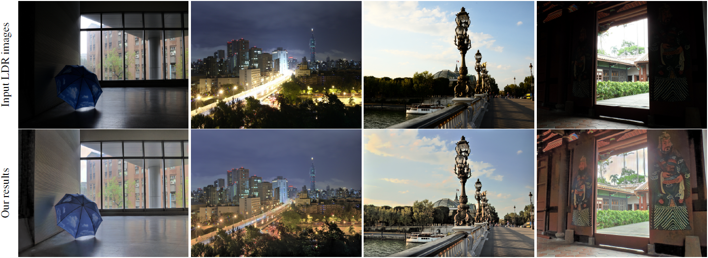

We propose an accurate and fast bundle adjustment (BA) solution that estimates the 6-DoF pose with an independent
RS model of the camera and the geometry of the environment based on measurements from a rolling shutter (RS)
camera. This tackles the challenges in the existing works, namely, relying on high frame rate video as input,
restrictive assumptions on camera motion, readout direction, and poor efficiency. To this end, we first verify the
positive influence of normalization to the image point on RSBA. Then we present a novel visual residual covariance
model to standardize the reprojection error during BA, which consequently improves the overall accuracy. Finally,
we demonstrate the combination of normalization and covariance standardisation weighting in RSBA
(NW-RSBA) can avoid common planar degeneracy without needing to constrain the filming manner. Besides, we
propose an acceleration strategy for NW-RSBA based on the sparsity of its Jacobian matrix and Schur
complement. The extensive synthetic and real data experiments verify the effectiveness and efficiency of the
proposed solution over the state-of-the-art works.
Citation
Yu-Lun Liu, Wei-Sheng Lai, Yu-Sheng Chen, Yi-Lung Kao, Ming-Hsuan Yang, Yung-Yu Chuang, and Jia-Bin Huang, "Revisiting Rolling Shutter Bundle Adjustment: Toward Accurate and Fast Solution", in IEEE Conference on Computer Vision and Pattern Recognition (CVPR), 2020
Bibtex
@inproceedings{nw-rsba,
author = {},
title = {},
booktitle = {IEEE Conference on Computer Vision and Pattern Recognition},
year = {2023}
}
Download

Video
1-minute video
Results
Results on the HDR-Synth, HDR-Real,
RAISE, HDR-Eye dataset, and examples from prior work and DxOMark
References
- • HDR image reconstruction from a single exposure using deep CNNs, SIGGRAPH Asia, 2017.
- • Deep reverse tone mapping, SIGGRAPH Asia, 2017.
- • ExpandNet: A deep convolutional neural network for high dynamic range expansion from low dynamic range content, Eurographics, 2018.